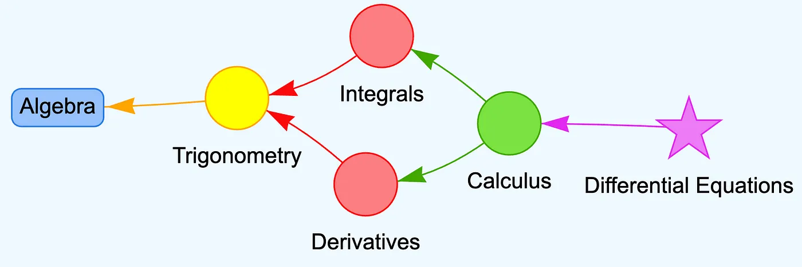

The Five Levels of Intelligent Textbooks
Introduction to Intelligent Textbook Classification
The concept of "intelligent textbooks" has evolved significantly with advancements in technology and educational theory. However, understanding the varying degrees of sophistication in these resources requires a clear classification system. This chapter presents a five-level framework for intelligent textbooks, inspired by the established levels of autonomous driving. This classification helps learning organizations strategize their approach to developing and implementing intelligent textbooks based on their capabilities, resources, and educational goals.
All models are wrong, but some are useful. — George Box
This framework isn't meant to be rigid but rather serves as a guide to understand the progression of textbook intelligence and functionality. Organizations may find themselves implementing features across different levels or even bypassing certain levels as technology and pedagogical approaches evolve.
Learning Graphs: The Foundation of Intelligent Textbooks
Before exploring the five levels, it's essential to understand the concept of learning graphs, which form the backbone of truly intelligent educational resources.
What Are Learning Graphs?
Learning graphs are concept dependency graphs that help guide intelligent agents in building customized learning paths for each student. These graphs map out concepts within a subject and their prerequisites, enabling navigation through educational content in a structured, personalized manner.

With the advent of advanced AI models, generating comprehensive learning graphs has become increasingly efficient. These structured representations of knowledge domains are crucial because:
Representation is the hardest part of AI. — Jeff Hawkins
Learning graphs serve as the foundation upon which higher levels of textbook intelligence are built, particularly for adaptive and autonomous systems.
The Five-Level Framework
Level 1 — Static Textbooks
Definition: Static textbooks are traditional printed or digital formats with no interactive elements.
Key Characteristics: - Composed purely of text and static images - Linear progression through material - No digital interactivity or personalization - Fixed content that doesn't adapt to the learner
Current Status: Over 90% of textbooks used by college students today remain at Level 1.
Use Cases: Simple, short content delivery where interaction isn't necessary or where technology access is limited.
Level 2 — Interactive Content Textbooks
Definition: Interactive textbooks incorporate digital elements that engage the reader beyond passive consumption.
Key Characteristics: - Keyword search functionality - Internal/external hyperlinks (e.g., to Wikipedia) - Embedded videos and multimedia content - Simple self-assessment quizzes - AI-generated MicroSims for concept visualization - Detailed glossary with in-text linking - Compatibility with social sharing (rich previews) - Usage analytics capabilities
Implementation Tools: - Documentation platforms like mkdocs-material - Development environments such as VS Code - JavaScript libraries for interactive simulations
Advantages: - Cost-effective enhancement of learning experiences - Facilitates distributed learning through shareable components - Improves engagement with multimedia elements - Supports basic self-assessment
Level 3 — Adaptive Textbooks
Definition: Adaptive textbooks dynamically adjust content based on user input, performance, and behavior.
Key Characteristics: - Personalized learning pathways through deterministic rules - Concept graph traversal algorithms for content sequencing - Selection of material based on assessment performance - Time-based rules for content review and reinforcement - Continuous recording of concept mastery on personal learning graphs
Technical Requirements: - Robust data management systems - Graph algorithms and traversal mechanisms - Vector stores and graph embeddings for content representation
Considerations: - Privacy concerns with tracking individual performance - Regulatory compliance (GDPR, FERPA) - Significant investment in security and auditing - Ethical implications of personalization
Level 4 — Textbooks with Chatbots
Definition: Level 4 textbooks integrate intelligent conversational interfaces to provide real-time assistance and personalization.
Key Characteristics:
- Integration of Large Language Models (LLMs) as tutoring assistants
- GraphRAG architecture combining multiple AI technologies
- Real-time feedback on student questions
- Content recommendations based on progress and interactions
- Comprehensive logging of student-AI interactions
Technical Architecture:
- NLP pipelines for query understanding
- LLMs for response generation
- Embeddings and vector stores for efficient retrieval
- Learning graphs as "ground truth" for factual accuracy
Implementation Strategies: - Balance between large, powerful LLMs and cost-effective smaller models - Consideration of locally-run models (e.g., Ollama) for privacy and efficiency - Careful design of logging mechanisms for performance tracking
Level 5 — Autonomous AI Textbooks
Definition: The aspirational level where AI-driven systems fully understand individual learner needs and autonomously generate personalized learning experiences.
Key Characteristics: - Deep understanding of individual student knowledge and goals - Real-time generation of customized lessons through natural language - Complete adaptability to learning styles and preferences - Autonomous decision-making about learning progression - Human-like tutoring capabilities with comprehensive support
Future Requirements: - Advanced hardware optimized for graph operations - More reliable and accurate LLMs - Sophisticated privacy-preserving technologies - Standardized frameworks for intelligent textbook interoperability
Current Status:
"Level 5 textbooks are like cars that drive themselves under all conditions: during a heavy snowstorm at night on roads under heavy construction—in other words, not happening in the near term."
Implementation Strategies and Considerations
Flexible Implementation
Organizations don't necessarily need to progress sequentially through all five levels. Depending on specific needs and available technologies, it may be advantageous to:
- Skip certain levels entirely
- Implement features from multiple levels simultaneously
- Focus on particular aspects that deliver the most educational value
For example, moving directly from Level 2 (interactive) to leveraging LLMs (as in Level 4) for generating responses to student queries might bypass some regulatory challenges associated with storing personal learning data in Level 3 implementations.
Key Considerations for Implementation
When developing intelligent textbooks at any level, consider:
- Educational Goals: What are the primary learning objectives?
- Technical Resources: What technologies and expertise are available?
- User Context: What is the technological proficiency of target learners?
- Regulatory Environment: What legal and ethical constraints apply?
- Scalability: How will the solution grow with increasing users?
- Maintenance: What ongoing support will be required?
Measuring Success
Success metrics for intelligent textbooks should include:
- Learning outcomes and knowledge retention
- Student engagement and satisfaction
- Time efficiency in achieving learning objectives
- Accessibility across diverse learner populations
- Cost-effectiveness compared to traditional methods
The Future of Intelligent Textbooks
As technologies continue to evolve, we can expect:
- Increasingly sophisticated learning graph generation
- More seamless integration of multiple modalities (text, video, simulations)
- Better standardization for exchanging intelligent textbook content
- Enhanced personalization with improved privacy safeguards
- Greater adoption of MicroSims and interactive elements
The ultimate vision is to provide equal learning opportunities for all students globally through advanced, accessible intelligent textbooks that adapt to individual needs while maintaining high educational standards.
"Never mistake a clear view for a short distance." — Paul Saffo
Summary
The five-level framework for intelligent textbooks provides a structured approach to understanding and implementing increasingly sophisticated educational resources:
- Level 1: Static textbooks with fixed content
- Level 2: Interactive textbooks with basic digital enhancements
- Level 3: Adaptive textbooks that personalize learning paths
- Level 4: Textbooks with integrated AI chatbots for assistance
- Level 5: Fully autonomous AI textbooks that function as comprehensive tutors
Learning graphs serve as the foundation for higher-level implementations, enabling structured representation of knowledge domains and prerequisites. While the full realization of Level 5 remains a future goal, significant advancements in Levels 2-4 are already transforming educational experiences for learners worldwide.
Review Questions
-
Compare and contrast Level 2 and Level 3 intelligent textbooks. What key features differentiate them?
-
How do learning graphs contribute to the functionality of adaptive textbooks?
-
What privacy and ethical considerations emerge as textbooks become more intelligent?
-
Explain the GraphRAG architecture used in Level 4 textbooks. How does it enhance the learning experience?
-
Why might an organization choose to implement features from multiple levels rather than progressing sequentially through the framework?
Practical Exercise
Design a learning graph for a topic in your field of expertise. Identify:
- Core concepts that must be understood
- Prerequisites for each concept
- Relationships between different concepts
- Potential assessment points to measure understanding
Use this learning graph to sketch how a Level 3 adaptive textbook might guide different learners through the material based on their prior knowledge and progress.
Generative AI Project
Use a generative tool such as Anthropic Claude or OpenAI ChatGPT to ask it to
- list the 100 core concepts in a course description you give it. - ask it to build a learning dependency graph of these concepts
- create a graph viewer using vis.js
- for a given end goal, ask it to build a learning path that include all the dependent concepts you don't already know